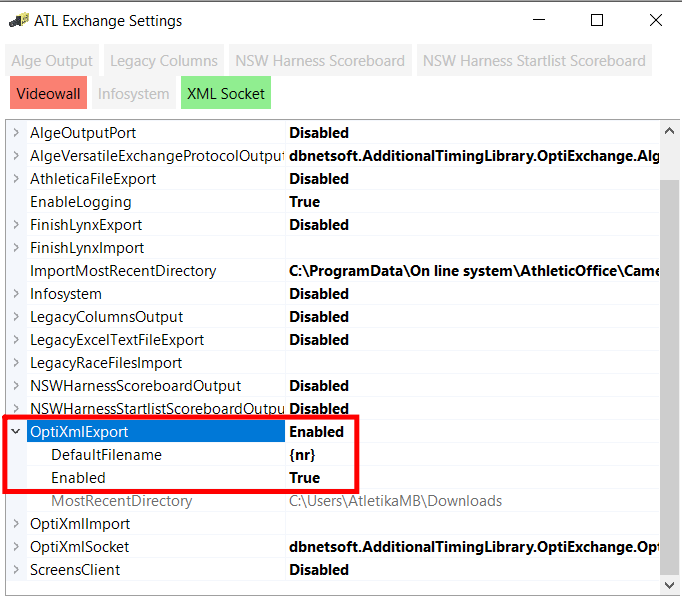

Skripty pro převod mezi formáty Atletické kanceláře (nastavení kamera Alge - formát pro starší verze OPTIc) a novou verzí OPTIc3NET.
Autor: Michal Töpfer, AC Mladá Boleslav, z. s.
Skripty vyžadují Python, který se dá stáhnout a nainstalovat z https://www.python.org/downloads/.
V programu OPTIc3NET je potřeba povolit export do XML a nastavit DefaultFileName na {nr}:

Skripty uložte přímo do složky se soubory generovanými z AK2 (C:\ProgramData\On line system\AthleticOffice\Camera\[ID závodu]).
Po vygenerování souborů pro kameru v AK2 spusťte prihlasky_(kancl-kamera).py. Ten vyrobí [číslo].heatxml soubory (ve stejné složce), které se dají importovat do OPTIc3NET (pravé tlačítko v okně Meet browser, Import heats).
V programu OPTIc3NET exportujte výsledky běhu (Export the result list v okně Heat list) do složky atletické kanceláře. Spusťte vysledky_(kamera-kancl).py. Ten převede soubory [číslo].heatresultxml na [číslo].txt, které umí importovat AK2.
Program umí výsledky exportovat také do CSV souboru (který lze ručně importovat do AK2). Tuto variantu můžete zkusit použít v případě problémů s výchozím způsobem převodu. Pro její zapnutí v souboru vysledky_(kamera-kancl).py nahraďte řádek GENERATE_CSV = False řádkem GENERATE_CSV = True.
V aktuální verzi už by měl fungovat také import rychlosti větru. Kromě souboru [číslo].txt se generuje také soubor [číslo].sav, ze které umí AK2 importovat rychlost větru. Pro běhy do 200m, u kterých chybí rychlost větru, se zobrazuje varování; to lze vypnout v souboru vysledky_(kamera-kancl).py nahrazením řádku WIND_WARNING = True řádkem WIND_WARNING = False.